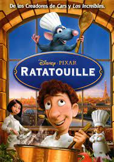

Toy Story (1995)
Los juguetes de Andy, un niño de seis años, temen que un nuevo regalo les sustituya en el corazón de su dueño. Woody, un vaquero que ha sido hasta ahora el juguete favorito, trata de tranquilizarlos hasta que aparece Buzz Lightyear. Lo peor es que el arrogante Buzz se cree que es un auténtico astronauta en plena misión para regresar a su planeta.

Los bichos (1998)
Una hormiga realiza una misión peligrosa para proteger a su colonia de un ejército de saltamontes terroristas.

Toy Story 2 (1999)
Cuando Andy se va de campamento dejando solos a los juguetes, Al McWhiggin, un compulsivo coleccionista de juguetes valiosos, secuestra a Woody. Buzz Lightyear y los demás juguetes tendrán que actuar con rapidez si quieren rescatarlo. Durante la operación de rescate no sólo tendrán que afrontar múltiples peligros, sino que también vivirán divertidas situaciones.

Monstruos, S.A (2001)
Monsters, Incorporated es la fábrica de sustos más grande en el mundo de los monstruos y James P. Sullivan es uno de sus mejores asustadores. Sullivan es un monstruo grande e intimidante de piel azul con grandes manchas color púrpura y cuernos. Su asistente, mejor amigo y compañero de cuarto es Mike Wazowski, un pequeño y alegre monstruo verde con un solo ojo. Por una falla durante la jornada de trabajo, conocen a Boo, una niña pequeña que entra a un mundo donde los humanos no están permitidos.
Buscando a Nemo (2003)
Nemo, un pequeño pececillo, muy querido y protegido por su padre, se pierde fuera de la gran barrera del arrecife australiano, después de ser capturado por este arrecife, Nemo terminará en una pecera en Sidney. Su padre, un pez payaso, parte en su búsqueda y se embarca en una peligrosa aventura con Dory, un pez con muy poca memoria. Al mismo tiempo, Nemo y sus nuevos amigos ya traman un plan para escapar de la pecera.

Los Increíbles (2004)
Un superhéroe retirado lucha contra el aburrimiento en un suburbio y junto con su familia tiene la oportunidad de salvar al mundo.

Cars (2006)
El aspirante a campeón de carreras Rayo McQueen parece que está a punto de conseguir el éxito. Su actitud arrogante se desvanece cuando llega a una pequeña comunidad olvidada que le enseña las cosas importantes de la vida que había olvidado.
Ratatouille (2007)
Remy es una rata que aprecia la buena comida y tiene un paladar bastante sofisticado. Su sueño es convertirse algún día en un gran chef francés a pesar de la oposición de su familia. El destino lleva a Remy a las alcantarillas de París, donde su situación no puede ser mejor, ya que se encuentra justo debajo de uno de los restaurantes más finos de París. El roedor se sentirá en el lugar perfecto para convertir su sueño en una realidad.
WALL-E (2008)
Tras cientos de años haciendo aquello para lo que fue construido: limpiar el planeta de basura, el pequeño robot Wall-e tiene una nueva misión cuando conoce a Eva.

Up (2009)
Carl Fredricksen es un vendedor de globos de 78 años de edad dispuesto a cumplir su sueño: atar miles de globos a su casa y volar a Sudamérica. Sin embargo, descubre demasiado tarde a un joven e inesperado polizón. Lo que en principio será recelo, acabará por tornarse simpatía hacia el muchacho mientras juntos pasan fascinantes aventuras en exóticos lugares.
Toy Story 3 (2010)
Cuando su dueño Andy se prepara para ir a la universidad, el vaquero Woody, el astronauta Buzz y el resto de sus amigos juguetes comienzan a preocuparse por su incierto futuro. Todos acaban en una guardería donde comenzarán una serie de trepidantes y divertidas aventuras.

Cars 2 (2011)
Rayo McQueen y la grúa Mate viajan al extranjero para participar en el primer Campeonato Mundial en el que se decidirá cuál es el coche más rápido de la tierra. Mate se convertirá en un espía secreto y McQueen competirá contra los mejores coches. El campeonato los llevará a Japón, París, Londres y por último, a Italia. Sin embargo, estarán muy ocupados para poder disfrutar de los placeres de cada lugar.

Un gran dinosaurio (2015)
A finales del periodo Cretácico, un asteroide se dirige a toda velocidad hacia la Tierra pero pasa de largo. Millones de años después, los dinosaurios han aprendido a hablar, construir y cultivar. Es entonces cuando nace el pequeño dinosaurio Arlo, un apatosaurio con un gran corazón. Arlo conocerá a un salvaje niño humano y juntos emprenderán un viaje lleno de peligros y emociones. El pequeño dinosaurio deberá enfrentarse a sus propios miedos y descubrirá de todo lo que es capaz.

Intensamente (2015)
Riley acaba de nacer y en el centro de control de su pequeña mente sólo hay sitio para Alegría. Poco después aparece Tristeza y, más tarde, Ira, Miedo y Asco. Las cinco emociones tendrán que ayudar a la niña cuando, ya con 11 años, su familia se mude desde su idílico pueblo del Medio Oeste estadounidense a la enorme e intimidante ciudad de San Francisco. Tras una serie de acontecimientos, Alegría y Tristeza tendrán que trabajar juntas para salvar a Riley.
Buscando a Dory (2016)
Con la ayuda de Marlin y su hijo Nemo, Dory, que sufre pérdidas de memoria a corto plazo, decide emprender un largo viaje en busca de sus padres, a los que perdió hace años.

Cars 3 (2017)
Eclipsado por los autos jóvenes, el veterano Rayo McQueen ha sido expulsado del deporte que tanto ama. Sin embargo, no se rendirá tan fácilmente, con la ayuda de sus amigos, Rayo aprende trucos nuevos para vencer al arrogante Jackson Storm, el rival que lo humilló.

Los Increíbles 2 (2018)
Helen es reclutada para ayudar a que la acción vuelva a la vida de los Súper, mientras Bob se enfrenta a la rutina de su vida diaria "normal" en el hogar. En casa debe lidiar con un bebé que está a punto de descubrir sus superpoderes. Mientras tanto un nuevo villano trama un plan brillante y peligroso que lleva a pique toda la estabilidad conseguida y que solo Los Increíbles podrán afrontar juntos.

Coco (2017)
Miguel es un niño que sueña con ser músico, pero su familia se lo prohíbe porque su tatarabuelo, músico, los abandonó, y quieren obligar a Miguel a ser zapatero, como todos los miembros de la familia. Por accidente, Miguel entra en la Tierra de los Muertos, de donde sólo podrá salir si un familiar difunto le concede su bendición, pero su tatarabuela se niega a dejarlo volver con los vivos si no promete que no será músico. Debido a eso, Miguel escapa de ella y empieza a buscar a su tatarabuelo.
Toy Story 4 (2019)
Woody siempre ha tenido claro cuál es su labor en el mundo y cuál es su prioridad: cuidar a su dueño, ya sea Andy o Bonnie. Sin embargo, Woody descubrirá lo grande que puede ser el mundo para un juguete cuando Forky se convierta en su nuevo compañero de habitación. Los juguetes se embarca en una aventura de la que no se olvidarán jamás.

Soul (2020)
Un profesor de música que ha perdido la pasión se transporta fuera de su cuerpo al "Gran Antes" y debe encontrar el camino de regreso con la ayuda de un alma infantil que aprende sobre sí misma.
Unidos (2020)
Ambientado en un mundo de fantasía suburbana, dos hermanos elfos adolescentes, Ian y Barley Lightfoot, se embarcan en una aventura en la que se proponen descubrir si existe aún algo de magia en el mundo que les permita pasar un último día con su padre, que falleció cuando ellos eran aún muy pequeños como para poder recordarlo.

Luca (2021)
Luca es un monstruo marino que vive debajo de un pueblo de la costa italiana. Cuando sale a la superficie, adquiere una apariencia humana, y conoce a un nuevo amigo, igual que él. Juntos emprenden una aventura entre humanos que odian a los monstruos.
Red (2022)
Mei Lee, una niña de 13 años un poco rara pero segura de sí misma, que se debate entre seguir siendo la hija obediente que su madre quiere que sea y el caos de la adolescencia.
The Birds
Antes de la cinta de Angry Birds, hubo un cortometraje con esta temática, que se convirtió en uno de los favoritos en los cortos animados de Disney Pixar. Es así como en el corto For The Birds, los pájaros que se ven en el vídeo suelen parecerse mucho al logo de Twitter. Fue lanzado en el año 2000 durante el estreno de la película “Monsters Inc.”

Day & Night
Debes acordarte de este cortometraje animado de Pixar, ya que lo proyectaron junto con Toy Story 3 en el año 2010. En este cortó se muestra de forma divertida cómo se da el cambio entre el día y la noche. Además, para lograr un gran efecto, los creadores combinaron la técnica de la animación 2D Y 3D. Por ello se lo considera uno de los mejores cortos animados de Pixar.

Boundin
Este corto acompañó el estreno de la cinta cinematográfica, “Los Increibles” en 2004. Tuvo de protagonista a un conejo y para su creación se inspiraron en animaciones de los años 50 y 60. Asimismo, es uno de los pocos cortos animados de Disney Pixar que presentan diálogos de los personajes.
Luxo Jr
Considerado uno de los cortos animados de Pixar para niños más predilectos, es una pequeña historia muy sencilla y entretenida para los espectadores. Posiblemente, también la recuerdes, porque este personaje de lampara animada apareció brevemente en el estreno de la segunda película de Toy Story. Aunque su primer estreno como cortometraje animado data del 17 de agosto de 1986. Incluso ese mismo año fue nominado a los Premios Oscar como «mejor cortometraje animado», y ganó el Oso de Plata al «mejor cortometraje» en el Festival Internacional de Cine de Berlín.

La Luna
La gran magia de los cortos de animación de Pixar se ve reflejada en este trabajo. Aquí se demuestra el gran talento de los productores, muy aparte de la conmovedora historia que quiere mostrar al público. Este cortometraje se pudo ver en estreno durante la película Brave en el año 2012.

Presto
Respetado por los creadores de cortometrajes que consideran que Presto es uno de los mejores cortos animados de Pixar, pues el objetivo fue rendir homenaje a los proyectos animados de los años 50 y 60. El corto animado se estrenó junto a la hermosa película de Wall-e en 2008. Asimismo, fue nominado a los premios Oscar en la categoría de «mejor cortometraje animado» aunque no logró ganar.

Jack Jack Attack
El pequeño integrante de la familia Parr, protagonistas de «Los Increíbles», debía tener su vídeo corto animado de Pixar. Además de que los productores querían darle un solo a este pequeño y divertido personaje. En este cortometraje se muestra al famoso bebé jugando con sus grandes poderes mientras lo cuida su niñera. El corto fue incluido en los extras del DVD de la película.

The Blue Umbrella
¿Alguna vez has creído que las sombrillas se enamoran? Pues gracias a este gran proyecto audiovisual, fue posible representar esta bonita historia de amor. Asimismo, fue uno de los cortometrajes de animación que cuenta con imágenes más realistas. En este caso, la película “Monster University”, de 2013, estuvo a cargo de su lanzamiento.

Knick Knack
Con este pequeño trabajo, retornaremos a los cortos de Pixar de los años 1989, donde sus protagonistas son pequeños juguetes de un estante. El dato curioso es que hubo un extenso trabajo en la realización de este corto animado, por lo que recién lo lanzaron en el año 2003, junto a la película “Buscando a Nemo”.

Partly Cloudy
Probablemente, para muchos expertos en marketing digital este es un proyecto audiovisual que es considerado uno de los vídeos para obtener más likes en las redes sociales. Mientras que para los espectadores, se trata de uno de los cortometrajes más preferidos de Pixar. De igual manera, tiende a ser un complemento o referencia indirecta a la película “Up: Una aventura de altura”, pues ambas reflejan las etapas de la vida.

Geri’s Game
Ya que tenía que realizarse un proyecto para que acompañe a la película de “Bichos”, fue así como se hizo este corto de animación Pixar. Incluso, al personaje principal, se le puede ver en la segunda entrega de la película Toy Story. Tanto fue el éxito de este proyecto, que ganó un Oscar como mejor cortometraje animado.
Lifted
Muchos lo consideran uno de los cortos más divertidos de Pixar, pues se trata de las aventuras de un alíen. Este corto acompañó al estreno de la famosa película “Ratatouille” en el año 2007. También cuenta con una escena de un grito al final, el cual todavía no se le encuentra explicación.
One Man Band
Si bien es uno de los tantos cortos de Cars de Pixar, pues no muestra en sí a los autos, pero sí refleja una de las enseñanzas de esta película. En especial, trata de demostrar que la envidia no es buena en ninguna forma. Cabe resaltar que este cortometraje animado fue visto durante el estreno de la película Cars en 2005.

Toy Story: Hawaiian Vacation
De hecho, no hay nada más divertido que ver a nuestros personajes favoritos de Toy Story de vacaciones en la playa. Es por ello que este emblemático cortometraje de Disney Pixar muestra a los queridos protagonistas deseando ir de vacaciones con Bonnie, pero no sucede fácilmente. Así que lo que pasa después, es una demostración de la verdadera amistad.

Piper
Piper es uno de los más recientes cortometrajes animados de Pixar. Además, este corto cuenta con grandes personajes y efectos especiales, y otra vez muestra a los dibujos con una figura más realista. De igual forma, le agregan el efecto de profundidad de campo que le da mucho más impacto.
Hola, Alberto (2021)
Con su mejor amigo Luca, en una escuela lejos de casa, Alberto disfruta de su nueva vida en Porto Rosso trabajando junto a Massimo, el imponente pescador manco y tatuado de muy pocas palabras, que es posiblemente el ser humano más fantástico del mundo en lo que respecta a Alberto. Él quiere más que nada impresionar a su mentor, pero es más fácil decirlo que hacerlo.